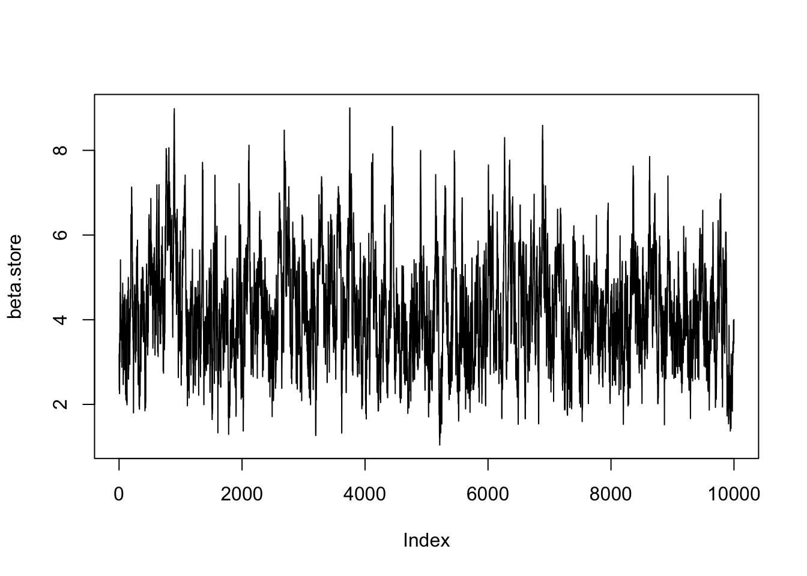
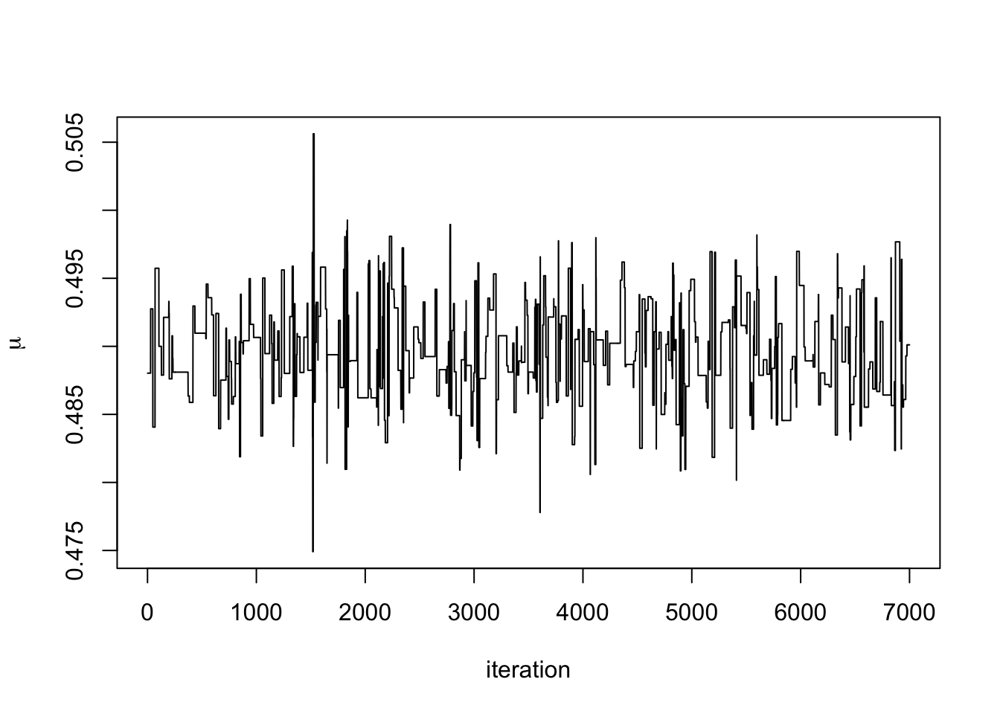

Chapter 6 Advanced Computation
Now we have the tools of Bayesian inference and methods to sample from complex posterior distributions, we can start to look at more advanced methods and models. This chapter is split into two distinct parts, each showing a different method in Bayesian inference.
6.1 Data Augmentation
Real world data are often messy with data points missing which may mean they are partially or completely unobserved. One common example of this is in clinical trials where people drop out of the trial before their treatment is complete. Another example is crime data, where only a fraction of crimes are reported and many crimes go unobserved. Two common ways to deal with partially or completely unobserved are:
- Remove data points that are not completely observed. This throws away information and is likely to increase the overall uncertainty in the estimates.
- Replace data points that are not completely observed with estimates such as the sample mean. This is likely to underestimate the uncertainty as we are treating the observation as completely observed when it is not.
The Bayesian framework provides a natural way for dealing with missing, partially, or completely unobserved data. It allows us to treat the missing data points as random variables and infer the data points alongside the model parameters. This provides us with a method to quantify the uncertainty around our estimates of the missing data points.
In data augmentation, we distinguish between two likelihood functions.
Definition 6.1 The observed data likelihood function is the likelihood function of the observed data.
Definition 6.2 The complete data likelihood function is the likelihood function of the observed data and any missing or censored data had they been fully observed.
The difference between the two likelihood functions is that the complete data likelihood function is the functions had we observed everything we want to observe. However, as the complete data likelihood function contains data we didn’t fully observe, we can’t compute it. Instead we can only evaluate the observed data likelihood function. A simple probability based example of this is if there are two events \(X\) and \(Y\), where the outcome of \(X\) is observed and \(Y\) unobserved. The complete data likelihood is \(pi(X = x, Y = y)\) because we are considering all the events, observed or not. However, we can only compute \(\pi(x) = \int_{y \in Y}\pi(X = x, Y = y)\) or \(\pi(x) = \sum_{y \in Y}\pi(X = x, Y = y)\), since \(y\) is unobserved.
In data augmentation, we start off with the observed data likelihood function and then augment this function by introducing variables that we want to have fully observed. This then gives us the complete data likelihood function.
6.1.1 Imputing censored observations
The first example we will look at is when data is censored. Instead of throwing away these observations, we will instead treat them as random variables and infer their values.
Example 6.1 A bank checks transactions for suspicious activities in batches of 1000. Denote the probability a transaction is suspicious by \(p\) and the number of suspicious transactions in a batch by \(Y\).
The bank checks five batches and observes \(y_1, \ldots, y_4\) suspicious transactions in the first four batches. Due to a computer error, the number of suspicious transactions in the final batch is not properly recorded, but is known to be less than 6.
The observed data likelihood functions is \[ \pi(y_1, \ldots, y_4, \tilde{y}_5 \mid p) = \left(\prod_{i=1}^4\begin{pmatrix} 1000 \\ y_i \end{pmatrix} p^{y_i}(1-p)^{1000 - y_i} \right)\left(\sum_{j=0}^5\begin{pmatrix} 1000 \\ j \end{pmatrix} p^{j}(1-p)^{1000 - j}\right). \] This is known as marginalising over the missing variable, just as we did in the simple probability example earlier. Placing a uniform prior distribution on \(p \sim U[0, 1]\) give the posterior distribution \[ \pi(p, \tilde{y}_5 \mid y_1, \ldots, y_4)= \left(\prod_{i=1}^4\begin{pmatrix} 1000 \\ y_i \end{pmatrix} p^{y_i}(1-p)^{y_i} \right)\left(\sum_{j=0}^5\begin{pmatrix} 1000 \\ j \end{pmatrix} p^{j}(1-p)^{1000 - j}\right). \] Although we could sample from this distribution, it is not easy to work with. Instead, we can write down the complete data likelihood. Suppose that \(y_5\) was observed, then the complete data likelihood may be written as \[ \pi(y_1, \ldots, y_5 \mid p) = \prod_{i=1}^5\begin{pmatrix} 1000 \\ y_i \end{pmatrix} p^{y_i}(1-p)^{1000 - y_i}, \] The posterior distribution is therefore \[ p \mid y_1, \ldots, y_5 \sim \hbox{Beta}\left(\sum_{i=1}^5 y_i + 1, 1001 - \sum_{i=1}^5 y_i\right). \]
The full conditional distribution of \(y_5\) given \(p\), the other data points an \(y_5 < 6\) is \[ \pi(y_5 = y \mid y_1, \ldots, y_4, y_5 < 1, p) = \frac{\begin{pmatrix} 1000 \\ y \end{pmatrix} p^{y}(1-p)^{1000 - y}}{\sum_{j=0}^{1000}\begin{pmatrix} 1000 \\ j \end{pmatrix} p^{j}(1-p)^{j}}, \qquad y < 6 \] This is a truncated distribution. We can use a Gibbs sampler alternating between sampling \(p\) and \(y_5\).
6.1.2 Imputing Latent Variables
Often there are variables that are cannot be observed, these may be hidden somehow or introduced to help with the modelling. Instead we can learn about this variable indirectly from the data.
A latent variable is a variable that cannot be observed.
A mixture model is an example of latent variables being useful.
Example 6.2 Royal Mail use image detection software to read postcodes on letters. A camera scans the front of an envelope and then records the barcode. This example is a very simplified version of how the system could work.
Suppose the machine is processing a bag of letters addressed to people in either B1 or B2 postcodes. The camera scans the first two characters of the postcode (B1 or B2) and records the proportion of the scanned image that is taken up by the characters. The picture below shows an example of what the scanned image looks like.

We introduce a latent variable \(z_i \sim \hbox{Bernoulli}(p)\) that describes if the characters on the \(i^{th}\) image are B1 or B2. The observation \(y_i\) is the proportion of the \(i^{th}\) image that is taken up by the characters. We observe \(y_i\), but want to estimate \(z_i\). The difficultly is there lack of one-to-one correspondence between the values \(y_i\) can take and the value \(z_i\). Due to the different handwriting and fonts used on envelopes, if the letter is going to B1 (\(Z = 1\)), then \(Y_i \sim N(0.7, 0.05^2)\) and if it is going to B2 (\(Z = 2\)), then \(Y_i \sim N(0.8, 0.02^2)\). The plot below shows the two densities and the overlap between them.
a <- seq(0.5, 0.9, 0.001)
x <- dnorm(a, 0.7, 0.05)
y <- dnorm(a, 0.8, 0.02)
plot(a, x, type = 'l', ylim = c(0, 20), xlab = expression(y),
ylab = "density")
lines(a, y, lty = 2)
As the variables \(\boldsymbol{z}\) are latent, the observed data likelihood function is \[ \pi(\boldsymbol{y} \mid p) =\prod_{i=1}^N \left[ p\pi(y_i \mid \mu = 0.7, \sigma^2 = 0.05^2) + (1-p)\pi(y_i \mid \mu = 0.8, \sigma^2 = 0.02^2)\right]. \] Instead, it’s easier to work with the complete data likelihood function, supposing we had observed the variables \(\boldsymbol{z}\). This is given by \[\begin{align*} \pi(\boldsymbol{y}, \boldsymbol{z} \mid p) &= \begin{pmatrix} N_1 + N_2 \\ N_1\end{pmatrix}p^{N_1}(1-p)^{N_2} \prod_{i; z_i = 1}\pi(y_i \mid \mu = 0.7, \sigma^2 = 0.05^2) \\ &\times\prod_{i; z_i = 2}\pi(y_i \mid \mu = 0.8, \sigma^2 = 0.02^2), \end{align*}\] where \(N_1\) and \(N_2\) are the number of letters for B1 and B2 respectively. This form makes it much easier to derive the posterior distributions and estimate the parameter values.
We place a uniform prior distribution on the parameter \(p\), which gives the posterior distribution \[ p \mid \boldsymbol{y}, \boldsymbol{z} \sim \hbox{Beta}(N_1 + 1, N_2 + 1). \]
The distribution of \(z_i\) given the parameter \(p\) and the observation \(y_i\) can be derived using Bayes’ theorem \[ p^*_i = \pi(z = 1 \mid p, y_1) = \frac{p\pi(y_i \mid \mu = 0.7, \sigma^2 = 0.05^2)}{p\pi(y_i \mid \mu = 0.7, \sigma^2 = 0.05^2) + (1-p)\pi(y_i \mid \mu = 0.8, \sigma^2 = 0.02^2)}. \] The full conditional distribution is therefore \(z_i \mid \boldsymbol{y}, p \sim \hbox{Bernoulli}(p^*_i)\).
An MCMC algorithm for this would repeat the following two steps:
- Sample \(p \mid \boldsymbol{y}, \boldsymbol{z} \sim \hbox{Beta}(N_1 + 1, N_2 + 1)\).
- Sample \(z_i \mid \boldsymbol{y}, p \sim \hbox{Bernoulli}(p^*_i)\) for each \(i\).
6.2 Gaussian Processes
So far in the module, we have considered prior distribution on parameters. These parameters have taken values (mostly real) or real-valued vectors. In this section, we’re going to extend this idea further to place prior distributions on functions. That is, we’re going to describe a prior distribution that when sampled gives us functions. The method we’re going to use is called a Gaussian Process (GP).
Before, we define a GP, we’re going to build an intuitive definition of it. Recall the normal distribution with mean \(\mu\) and variance \(\sigma^2\), \(N(\mu, \sigma^2)\). It assigns probabilities to values on the real line – when we sample from it, we get real values. The plot below shows the density function for a \(N(0, 1)\) distribution and five samples.
#Plot N(0, 1)
x <- seq(-4, 4, 0.01)
y <- dnorm(x)
plot(x, y, type = 'l')
#Add samples
samples <- rnorm(5)
rug(samples)
The multivariate normal distribution extends this to a vector space, \(\mathbb{R}^N\). Instead of having a mean and variance value, the distribution is defined through a mean vector and covariance matrix. The mean vector describes the expected value of each component of the vector and the covariance matrix describes the relationship between each pair of components in the vector. When we draw samples, we get vectors. The plot below shows the density of the multivariate normal distribution with \(N = 2\), zero mean, \(\sigma^2_x = \sigma^2_y = 1\) and \(\rho = 0.7\).
#Create Grid
x <- seq(-3,3,length.out=100)
y <- seq(-3,3,length.out=100)
#Evaluate density at grid
z <- matrix(0,nrow=100,ncol=100)
mu <- c(0,0)
sigma <- matrix(c(1, 0.7, 0.7, 1),nrow=2)
for (i in 1:100) {
for (j in 1:100) {
z[i,j] <- mvtnorm::dmvnorm(c(x[i],y[j]),
mean=mu,sigma=sigma)
}
}
#Generate contour plot
contour(x, y ,z)
A GP takes this one step further and puts a prior distribution on a function space. It is specified by a mean function, \(\mu(\cdot)\) and covariance function \(k(\cdot, \cdot)\). The mean function describes the expected value of each point the function can be evaluated at, and the covariance function describes the relationship between each point on the function. The plot below shows three samples from a GP distribution with mean function the zero function \(\mu(x) = 0\, \forall x\) and a covariance function that supports smooth functions.

Definition 6.3 A Gaussian Process is a collection of random variables, any finite number of which have a joint Gaussian distribution.
This says that is we think of a function as an infinite collection of points, then if any finite subset of those points following a Gaussian distribution, we have a Gaussian process. In reality, we set up the function so that is meets this definition. More formally,
Definition 6.4 A GP distribution on a function \(f(x)\) is defined through its mean function \(\mu(x) = \mathbb{E}(x)\) and covariance function \(k(x, x') = \mathbb{E}(x)\left((f(x) - \mu(x))(f(x') - \mu(x'))\right)\). We write it as \(f(x) \sim \mathcal{GP}(\mu(x), k(x, x'))\).
Before we go any further, it is worth proceeding with caution. Those with good memories, we recall Bernstein-von-Mises’ theorem from Chapter 3.
Theorem 6.1 (Bernstein-von-Mises) For a well-specified model \(\pi(\boldsymbol{y} \mid \theta)\) with a fixed number of parameters, and for a smooth prior distribution \(\pi(\theta)\) that is non-zero around the MLE \(\hat{\theta}\), then \[ \left|\left| \pi(\theta \mid \boldsymbol{y}) - N\left(\hat{\theta}, \frac{I(\hat{\theta})^{-1}}{n}\right) \right|\right|_{TV} \rightarrow 0. \]
Bernstein-von-Mises’ theorem only holds when the model has a fixed (i.e. finite) number of parameters. A GP is defined on an infinite collection of points, and so this theorem does not hold. This is the first time in this module we have encountered a distribution where Bernstein-von-Mises’ theorem does not hold. Fortunately, various forms of Bernstein-von-Mises’ theorems for GPs exist, with many coming about in the early 2010s. However, this is still an ongoing area of research.
6.2.1 Covariance Functions
One issue when using GPs is describing the covariance function. How do we decide how each pair of points (there being an infinite number of them)? There are lots of standard choices of covariance functions that we can choose from, each one making different assumptions about the function we are interested in.
The most common covariance function is the squared exponential functions. It is used to model functions that are ‘nice’, i.e. they are smooth, continuous and infinitely differentiable.
Definition 6.5 The squared exponential covariance function takes the form \[ k(x, x') = \alpha^2\exp\left\{-\frac{1}{l}(x-x')^2\right\}, \] where \(\alpha^2\) is the signal variance and \(l>0\) is the length scale parameter.
For now, consider \(\alpha = l = 1\). What is the covariance between the function evaluated at 0 and the function evaluated at \(x\)? The plot below shows the covariance.

The covariance is highest when the \(x\) is near to 0, i.e. the points are immediately next to each other. If the value of \(x\) is \(\pm 2\), the covariance is 0. As we are dealing with a joint normal distribution, a covariance of 0 implies independence. So with this covariance function, the value of \(f(x)\) is independent of \(f(0)\) if \(|x|\) is larger than about two. The parameter \(l\) is called the length scale parameter and dictates how quickly the covariance decays. Small values of \(l\) mean that the value of the function at nearby points are independent of each other, resulting in functions that look like white noise. Large values of \(l\) mean that even if points are far away, they are still highly dependent on each other. This gives very flat functions.
The squared exponential covariance function produces functions that are continuous and differentiable. There are many other types of covariance functions, including ones that don’t produce functions that are continuous or differentiable. Two more are given below.
Definition 6.6 The M'atern covariance function models functions that are differentiable only once: \[ k(x, x') = \left(1 + \frac{\sqrt{3}(x - x')^2}{l} \right)\exp\left\{-\frac{\sqrt{3}(x - x')^2}{l} \right\}. \]
Definition 6.7 The periodic covariance function models functions that are periodic and it is given by \[ k(x, x') = \alpha^2 \exp\left\{-\frac{2}{l}\sin^2\frac{(x-x')^2}{p} \right\}, \] where the period is \(p\).
6.2.2 Gaussian Process Regression
One of the main applications of GPs in in regression. Suppose we observe the points below \(\boldsymbol{y} = \{y_1, \ldots, y_N\}\) and want to fit a curve through them. One method is to write down a set of functions of the form \(\boldsymbol{y} = X^T\boldsymbol{\beta} + \boldsymbol{\varepsilon}\), where \(X\) is the design matrix and \(\boldsymbol{\beta}\) a vector of parameters. For each design matrix \(X\), construct the posterior distributions for \(\boldsymbol{\beta}\) and use some goodness-of-fit measure to choose the most suitable design matrix.

One difficulty is writing down the design matrices \(X\), it is often not straightforward to propose or justify these forms GPs allow us to take a much less arbitrary approach, simply saying that \(y_i = f(x_i) + \varepsilon_i\) and placing a GP prior distribution on \(f\).
Although we’re placing an prior distribution with an infinite dimension on \(f\), we only ever need to work with a finite dimensional object, making this much easier. We only observe the function at finite number of points \(\boldsymbol{f} = \{f(x_1), \ldots, f(x_N)\}\) and we will infer the value of the function at points on a fine grid, \(\boldsymbol{f}^* = \{f(x_1^*), \ldots, f(x_N^*)\}\). By the definition of a GP, the distribution of these points is a multivariate normal distribution.
Example 6.3 Suppose we observe \(\boldsymbol{y} = \{y_1, \ldots, y_N\}\) at \(\boldsymbol{x} = \{x_1, \ldots, x_N\}\). The plot below shows these points.
Using the model \(y_i = f(x_i) + \varepsilon_i\), where \(\varepsilon_i \sim N(0, \sigma^2)\), we want to infer the function \(f\) evaluated at a gird of points \(\boldsymbol{f}^* = \{f(x_1^*), \ldots, f(x_N^*)\}\). We place a GP prior distribution on \(f \sim \mathcal{GP}(0, k)\), where \(k\) is the squared exponential covariance function. Using the model, the covariance between points \(y_i\) and \(y_j\) is \[ \textrm{cov}(y_i, y_j) = k(x_i, x_j) + \sigma^21_{i=j}. \] That is the covariance function evaluated at \(x_i\) and \(x_j\) plus \(\sigma^2\) if \(i = j\). We can write this in matrix form as \(K(\boldsymbol{x}, \boldsymbol{x}) + \sigma^2I\) where \(I\) is the identity matrix. The distribution of \(\boldsymbol{y}\) is therefore \(\boldsymbol{y} \sim N(\boldsymbol{0}, \, K(\boldsymbol{x}, \boldsymbol{x}) + \sigma^2I)\). By definition of the GP, the distribution of the function evaluated at the fine grid is \(\boldsymbol{f}^* \sim N(\boldsymbol{0}, K(\boldsymbol{x}^*, \boldsymbol{x}^*))\).
We can now write the joint distribution as \[ \begin{pmatrix} \boldsymbol{y} \\ \boldsymbol{f}^* \end{pmatrix} \sim N\left(\boldsymbol{0}, \, \begin{pmatrix} K(\boldsymbol{x}, \boldsymbol{x}) + \sigma^2I & K(\boldsymbol{x}, \boldsymbol{x}^*)\\ K(\boldsymbol{x}^*, \boldsymbol{x}) & K(\boldsymbol{x}^*, \boldsymbol{x}^*) \end{pmatrix}. \right) \] The off-diagonal terms in the covariance matrix describe the relationship between the observed points \(\boldsymbol{y}\) and the points of interest \(\boldsymbol{f}^*\). We can now write down the distribution of \(\boldsymbol{f}^*\) given the observed points \(\boldsymbol{y}\) and \(\sigma^2\). \[ \boldsymbol{f}^* \mid \boldsymbol{y}, \sigma^2 \sim N(\boldsymbol{\mu}^*, \, K^*), \] where \(\boldsymbol{\mu}^* = K(\boldsymbol{x}^*, \boldsymbol{x})(K(\boldsymbol{x}, \boldsymbol{x}) + \sigma^2 I)^{-1} \boldsymbol{y}\) and \(K^* = K(\boldsymbol{x}^*, \boldsymbol{x}^*) - K(\boldsymbol{x}^*, \boldsymbol{x})(K(\boldsymbol{x}, \boldsymbol{x}) + \sigma^2I)^{-1}K(\boldsymbol{x}, \boldsymbol{x}^*)\).
We set the fine gird to be \(\boldsymbol{x}^* = \{-5, -4.99, -4.98, \ldots, 5\}\), the GP parameters \(\alpha = l = 1\) and \(\sigma = 0.2\). The posterior mean and 95% credible interval are shown below.
 The posterior mean for \(f\) is a smooth line passing near each point. The 95% credible interval for \(f\) has the smallest variance near each point, and largest furthest away from the points.
The posterior mean for \(f\) is a smooth line passing near each point. The 95% credible interval for \(f\) has the smallest variance near each point, and largest furthest away from the points.